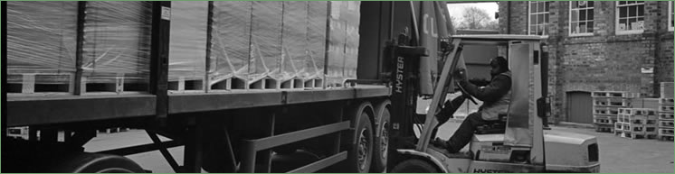

Where Did the Paper Go?
 |
{kind=link}
Paper produced in Penicuik travelled around the world, because of its reputation as a high quality product. It was used by a wide range of printers, publishers, stationers, manufacturers and businesses in many countries. In addition to having a ready-made market in Edinburgh, the mills established a chain of offices, depots and sales agencies across Britain to secure orders and meet demand for different types of paper. Gradually, this became a global network that stretched from South America to Australia and back to Europe. |
||||
| Penicuik paper was used in the manufacture of diverse products by a large number of British and foreign companies. The main products included: books, magazines, newspapers, brochures, maps, charts, posters, labels, bank notes, cheque books, business stationery, artists’ materials, writing paper, wallpaper, notebooks, diaries, envelopes, packing paper. It really was ‘A Paper for Every Purpose’ as one mill declared in its advertising. Well known companies who used Penicuik paper included: Unilever, 3M Printing Company, Kalamazoo Ltd, Oxford and Cambridge University Presses, HarperCollins, Windsor and Newton, Brown and Polson, the Morris Motor Company, Cadbury, Bank of Scotland, Encyclopaedia Britannica, Formica Ltd, HMSO, McDougall’s Educational Co., Thomas De La Rue, Twinlock. A small selection of Edinburgh printing and publishing companies who used Penicuik paper: John Bartholomew & Son, W & R Chambers, Thomas Nelson & Sons, Neill & Co, Pillans & Wilson, Waddies, R M Cameron & Son, Morrison & Gibb, Thomas H Peck, R & R Clark, Hunter & Foulis, Oliver & Boyd. The firm of Alex Cowan & Sons Limited had branches worldwide. Records show that, at one time, they also had agencies in Montreal, Canada as recorded in Cowans trade magazine and also at Durban, South Africa. Around 1950, Cowan’s had a total of 9 factories, 24 branches and 24 agencies worldwide. Cowan’s presence in Australia and New Zealand was of great significance to the company and was only exceeded by their operations in Scotland and elsewhere in the United Kingdom. In 1928, Cowan’s had a total of some 43 sales representatives in Australia and New Zealand. |
||||
{kind=link}


Penicuik Historical Society :: Penicuik Town Hall :: 33 High Street :: Penicuik :: EH26 8HS
e-mail :: info@penicuikpapermaking.org
e-mail :: info@penicuikpapermaking.org
© Penicuik Historical Society :: site by Wallace Web Design